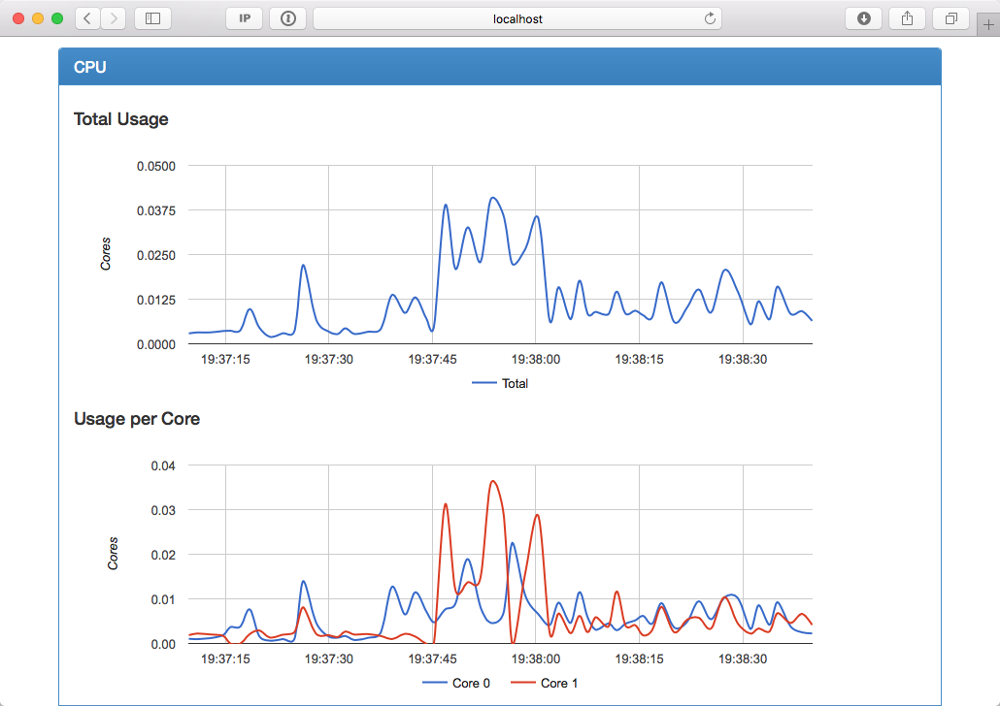
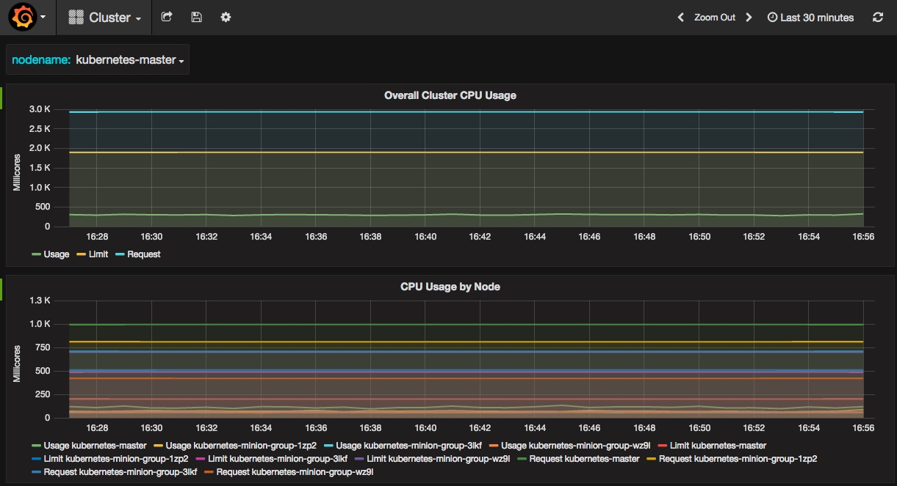

Docker监控
cAdvisor
cAdvisor是一个来自Google的容器监控工具，也是kubelet内置的容器资源收集工具。它会自动收集本机容器CPU、内存、网络和文件系统的资源占用情况。

InfluxDB和Grafana
InfluxDB是一个开源分布式时序、事件和指标数据库；而Grafana则是InfluxDB的dashboard，提供了强大的图表展示功能。

Prometheus
Prometheus是另外一个监控和时间序列数据库，并且还提供了告警的功能。他提供了强大的查询语言和HTTP接口，也支持将数据导出到Grafana中展示。

使用docker-compose.yml可以方便的启动一个cAdvisor、Prometheus和Grafana展示的服务。
需要注意的是，Prometheus目前还不支持swarm mode，prometheus-docker-swarm提供一个支持swarm mode的方法：
|
这实际上是通过docker-prometheus-bridge生成了一个Prometheus配置文件：
|
其他容器监控系统
- Sysdig
- CoScale
- Datadog
- Sematext